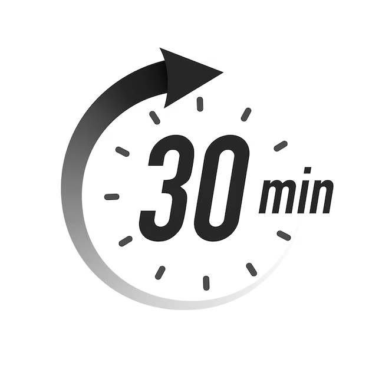
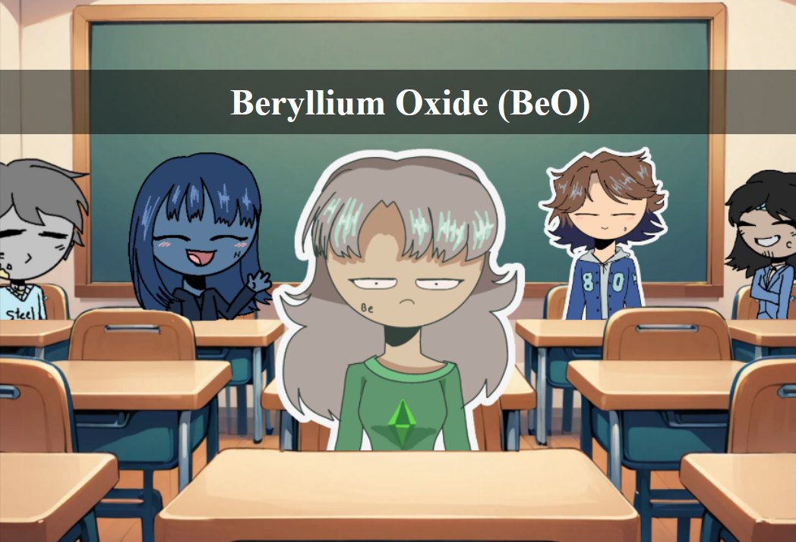
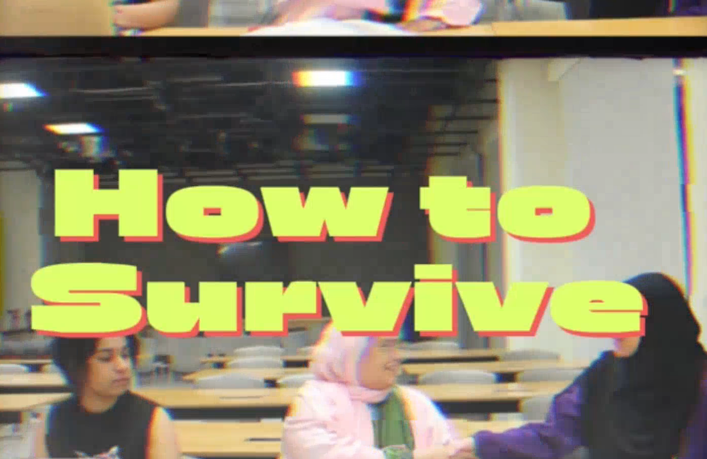

Projects

Morning Routine at NYUAD
An interactive web experience promoting mindful and productive mornings at NYUAD through tips, alumni stories, and community-submitted routines.
GitHub

Beryllium Oxide (BeO) Interactive Comic
An interactive comic that creatively teaches chemistry through the story of Beryllium and Oxygen, exploring themes of self-acceptance, friendship, and bonding with engaging visuals and click-based storytelling.
GitHubNotes from the Piano
A playful and emotional audio diary from the perspective of Susan, a dramatic Steinway piano, blending storytelling and sound design as she journeys through chaotic environments in search of respect and harmony.
GitHub

How to Survive a Group Project?
A humorous multimedia project that captures the chaos of student group work through a relatable video and an interactive game exploring each team member’s “survival role.
GitHub